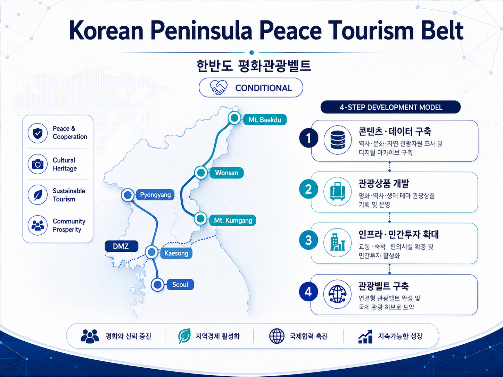

Korean Peninsula Peace Tourism Belt
PUBLIC RELEASE한반도 평화관광벨트

도표 6. 한반도 평화관광벨트 개념도
| STATUS 조건부 추진 (CONDITIONAL) · 실제 관광사업은 남북관계·정부 승인·출입국·제재·인허가 조건 충족 시 추진 |
한반도 평화관광벨트는 관광·문화·생태 자원을 콘텐츠와 데이터로 먼저 축적하고, 제도적 여건이 조성될 경우 관광상품·교통·숙박·이벤트로 확장하는 장기 핵심 구상입니다.
| VISION ROUTE 서울 → DMZ → 개성 → 평양 → 원산 → 금강산 → 백두산 |
위 노선은 현재 확정된 교통·관광 노선이 아니라 장기 관광벨트의 개념 모델입니다.
4-Stage Expansion Roadmap
1. 관광 콘텐츠·데이터 구축 — 한반도 100대 관광자원
2. 공동 관광상품 개발 — 실제 상품·예약·EO Utility 연계
3. 민간투자·관광 인프라 확대 — 숙박·교통·리조트·이벤트
4. 한반도 관광벨트 구축 — 주요 관광거점을 연결하는 장기 네트워크
한반도 100대 관광자원
평화관광벨트의 첫 단계는 관광시설 개발이 아니라 관광 콘텐츠와 데이터의 선제적 구축입니다. 남북 전체의 주요 관광·문화·생태 자원 100개를 선정해 영상·사진·역사·문화·지역 정보를 체계적으로 축적하고, 향후 관광상품화 가능성을 연구하는 프로젝트를 추진합니다.
Selection Framework
관광·역사·문화·지역·북한 관련 전문가가 1차 후보군을 구성하고, 통일TV 시청자와 EO 커뮤니티의 의견·참여를 일부 반영하는 전문가 + 대중 참여 결합형을 지향합니다.
Monetization Path
| FREE CONTENT → PREMIUM DATA → B2B LICENSE → TOURISM PRODUCT 기본 콘텐츠는 공개하고, 심층 리포트·데이터팩·영상·사진 라이선스 및 향후 실제 관광상품으로 확장합니다. |
「한반도 100대 관광자원」은 평화관광벨트 전체는 CONDITIONAL이지만, 콘텐츠·데이터 준비는 그 이전에도 추진 가능한 사전 준비 영역으로 설명합니다.
Rail, Hospitality & EO Utility
Rail & Sleeper Train
철도·침대열차는 한반도 관광벨트의 핵심 장기 교통·경험 요소로 강조합니다. EO 생태계가 철도 인프라를 직접 건설·운영하는 것을 기본모델로 하지 않고, 정부·철도기관·전문사업자가 운영하는 인프라 위에 관광상품·콘텐츠·예약·Access Utility를 연결하는 플랫폼 역할을 지향합니다.
Hospitality & Integrated Resort
초기에는 전문 개발사·호텔운영사와 제휴하여 관광상품·예약·콘텐츠·EO 전용 혜택을 연결합니다. 장기적으로 사업성과 법률·인허가 조건이 충족되는 경우 프로젝트 단위의 공동사업 또는 전략적 지분 참여 가능성을 검토합니다. 공개 백서에서는 카지노를 직접 표현하지 않고 숙박·관광·레저를 결합한 복합관광 인프라로 설명합니다.
EO Utility in Tourism
상품별로 EO 결제 가능 여부 지정
EO 결제가 허용된 상품은 전액 EO 또는 전액 법정화폐 방식
일부 프리미엄·한정 관광상품은 EO 전용으로 운영 가능
특별 일정·좌석·숙박·체험을 Experience & Access Utility와 연계
초기 콘텐츠 단계에서는 EO 비중 낮게, 실제 관광상품 단계에서 Utility 확대